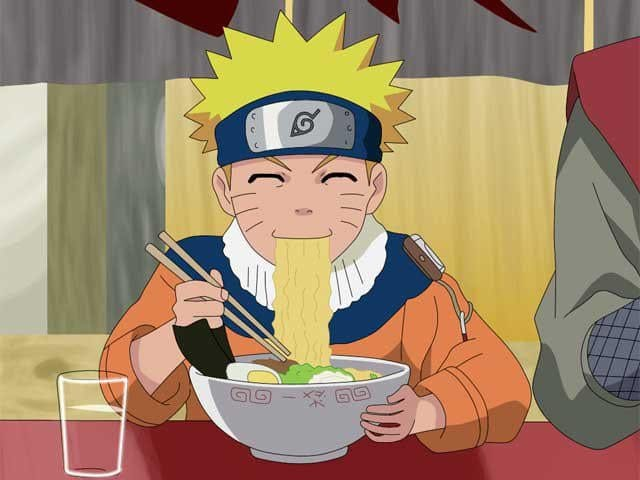
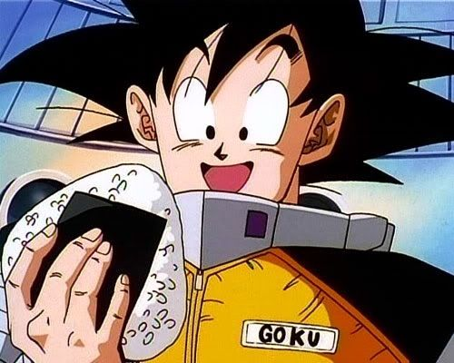
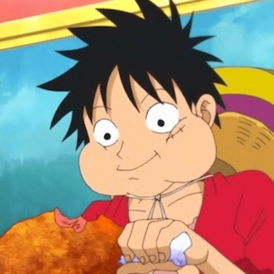

Sobre

Ramen - Naruto
O ramen do Naruto Uzumaki aparece já no primeiro episódio de Naruto, quando ele é visto comendo no icônico Ichiraku Ramen, um lugar simples que acaba se tornando muito mais do que só um restaurante na história. Ao longo do anime, o ramen vira quase um símbolo de tudo que o Naruto representa: persistência, simplicidade e aquele desejo forte de ser reconhecido. É ali que ele encontra conforto nos momentos difíceis e celebra pequenas vitórias, criando uma conexão emocional que vai além da comida. Na vida real, o ramen é um prato tradicional japonês feito com caldo rico, macarrão e acompanhamentos como carne de porco, ovo e cebolinha, sendo o tipo mais parecido com o favorito do Naruto o missô ou tonkotsu, conhecidos pelo sabor intenso e reconfortante — exatamente o tipo de refeição que combina com alguém cheio de energia e determinação como ele.

Onigiri - Dragon Ball
O onigiri associado a Son Goku aparece em diversos momentos de Dragon Ball, principalmente nas fases iniciais, quando sua rotina simples e seu apetite gigantesco já eram marcas registradas. Apesar de não estar ligado a um único episódio específico como algo central, o onigiri surge como parte natural da alimentação do personagem, reforçando o estilo de vida direto e sem frescura do Goku. Dentro da história, ele representa exatamente isso: simplicidade, energia e a capacidade de se manter forte mesmo com o básico, algo que combina perfeitamente com alguém que evolui constantemente sem perder sua essência. Na vida real, o onigiri é um prato tradicional japonês feito de arroz moldado, geralmente em formato triangular, com recheios como peixe, carne ou vegetais, sendo prático, nutritivo e fácil de levar — praticamente o combustível ideal pra alguém que vive treinando e lutando sem parar.

Carne - One Piece
A carne em One Piece é praticamente uma marca registrada de Monkey D. Luffy, aparecendo desde os primeiros episódios como o alimento favorito do personagem. Sempre que tem carne envolvida, é garantia de ver o Luffy feliz, recuperando energia ou simplesmente sendo ele mesmo sem pensar em mais nada. Dentro da história, a carne representa esse lado instintivo e livre dele — força bruta, alegria simples e uma vontade insaciável de viver e aproveitar cada momento. É quase como um combustível direto pra personalidade explosiva e determinada que ele carrega. Na vida real, a carne pode ser preparada de várias formas, como assada ou grelhada, geralmente servida em pedaços grandes e suculentos, exatamente como no anime, trazendo aquela ideia primitiva e poderosa de alimento que sustenta o corpo e dá energia — perfeito pra alguém que vive no limite como o Luffy.
Sopa de Urso - Hajime no Ippo
A carne de urso em Hajime no Ippo aparece durante o arco de treinamento nas montanhas, quando o Takamura Mamoru protagoniza uma das cenas mais insanas do anime ao enfrentar um urso praticamente na força bruta. Esse momento não só marca um dos episódios mais memoráveis da obra, como também reforça o nível absurdo do personagem. Dentro da história, a carne de urso vira um símbolo claro da brutalidade e da força fora do comum do Takamura, representando alguém que ultrapassa limites humanos com uma naturalidade quase assustadora. Na vida real, a carne de urso é consumida em algumas regiões do mundo, especialmente em áreas mais frias, sendo conhecida por ser mais gordurosa e pesada, exigindo preparo adequado — o que combina perfeitamente com a ideia de um alimento extremo, digno de alguém tão exagerado quanto o próprio Takamura.